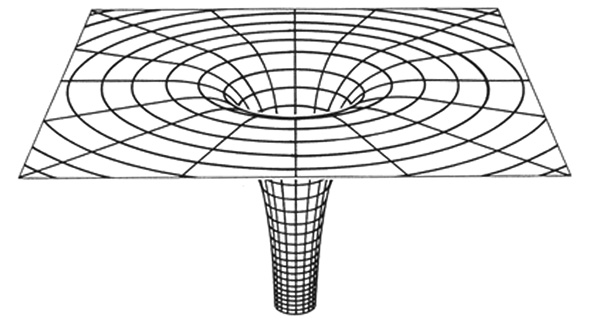
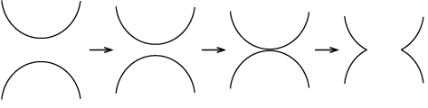
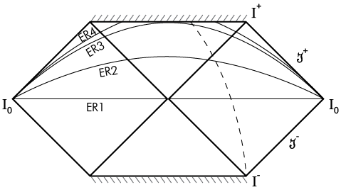
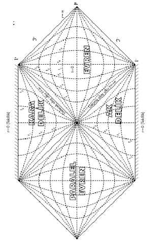
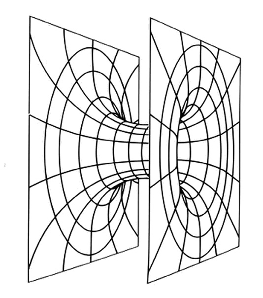
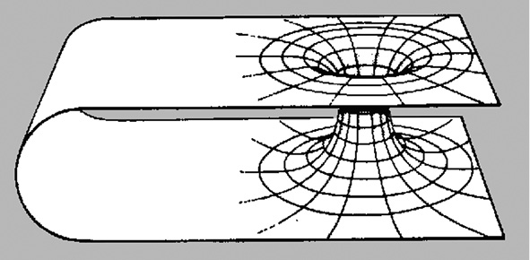
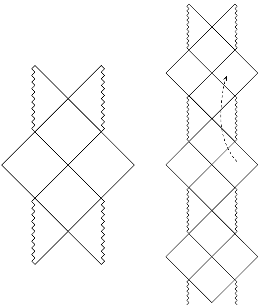

Şekil 59. Reissner-Nordström kara deliğinin Penrose diyagramı.
7. Bölüm - KARA DELİKLER
44-Kara delik nedir?
- Kara delik tam olarak nedir?
- En basit tanımıyla, “çekimi” ışığın bile kaçmasına engel olabilecek kadar kuvvetli olan bir cisim.
- Bu yüzden “kara”, değil mi?
- Eh, tabii... Ancak bu basit tanım, yalnızca benim “Newton × Newton × Newton ” ya da “Newton-küp” diye tabir ettiğim fizikte anlamlı; yani Newton’un mekanik, genelçekim ve ışık kuramları kabul edilirse—
- Newton’un ışık kuramı da mı var?
- Eski Yunanlılar, ışığın gözden çıkan bir şey olduğuna inanıyorlardı. Bunun tersi, yani ışığın görülen cisimlerden göze gelen bir şey olduğu ve çok küçük, çok hızlı parçacıklardan oluştuğu 11. yüzyılda İbni Heysem tarafından ortaya atıldı. 17. yüzyılda da ışığın ilk dalga kuramı ortaya çıktı. Newton ise parçacık kuramını benimsedi ve ışığın kırılmasını, kırma indisi yüksek ortamların ışık parçacıklarını daha kuvvetli çekmesi ile açıklamaya çalıştı.
İşte bu çerçevede, ışığını tutacak kadar kuvvetli çekimi olan bir cisim düşünmek mümkün ve düşünüldü... 1784’te, sonradan unutulan bir makalesinde Michell ve 1796’daki bir kitabında Laplace bu tür cisimlerden bahsederler. Hatta Michell, daha sıradan bir yıldızdan gelen ışığın yavaşlayacağını, eğer bir yıldızdan gelen ışığın hızını ölçmek mümkün olursa, o yıldızın kütle/yarıçap oranının bulunabileceğini yazar...
İşin ilginci, “kendi ışığını tutan” cisimlerin yarıçapı bu çerçevede hesaplanınca, çok sonradan “kara deliğin yarıçapı” olarak nitelenen ifade bulunuyor.
- Nasıl yani? Işık kuramı büyük ölçüde yanlış, klasik mekaniğin ışığa uygulanamaması lazım, çekim kuramı da bu şartlarda uygulanamamalı, ama sonuç doğru mu çıkıyor?
- Biraz “sonuç”tan ne anladığına bağlı; ama kabaca, evet. Yani, bir “ışık parçacığı”nın, M kütleli, r yarıçaplı, küresel simetrik bir cismin yüzeyinden sonsuza gidebilmek için kazanması gereken “potansiyel enerji”nin, sahip olduğu “kinetik enerji”den fazla olması şartı, -
çıkıyor.78 Bu da, daha sonra modern tanımda bulacağımız ışığın kaçamadığı yarıçap ile aynı; ama aslında “yarıçap”ın tanımı bile hafif farklı.
78)Bunun hesabı şöyle: “Işık parçacığı”nın, cismin yüzeyindeyken, sonsuza göre potansiyel enerjisi -, hızı c olduğu için kinetik enerjisi -. (Bu iyice yanlış tabii.) Sonra bunların toplamının pozitif olma, yani parçacığın sonsuzda bile kinetik enerjisi olma şartına bakarak, metindeki ifadeyi buluyoruz. Demek ki burada yanlışlar birbirlerini götürüyor.
- O kadar basit olmayan tanımları da var anlaşılan...
- Eh, tabii... Gerçekte “çekim” yok, hatırlıyor musun? Soru 35’e bakabilirsin. Dolayısıyla genel görelilik, yani geometri cinsinden de bir tanımı olmalı; değil mi? Genel görelilik de bize, madde-enerjinin uzay-zamanı eğeceğini söylüyordu. Örneğin Güneş veya benzer bir yıldızın olduğu yerdeki bir uzay-zaman kesitinin gerçek geometrisini üç boyuta “gömersek”, Şekil 48’i elde ederiz...
İşte kara delikler bu eğriliğin çok yüksek olduğu durumları temsil eder: Kütle-enerji uzay-zamanı o kadar eğmiştir ki, bir “delik” açmıştır. (Şekil 49)

Şekil 49. Bir kara deliğin merkezinden geçen bir düzlemin geometrisinin üç boyuta “gömülmüş” hali. Bunu şekil 48’in bir uç hali olarak düşünebiliriz. Yüzey, merkeze ulaşmıyor, ortası boş. Bu yüzden “delik.”
- Bu mudur kara deliğin modern tanımı?
Genel görelilikte kara delik diye “olay ufku” ile çevrili cisme/bölgeye denir.
- Ama bir tanımı başka bir tanımla yaptınız... “Olay ufku” nedir?
“Olay ufku”, cisimlerin -ışık dahil- bir yönde geçebildikleri, ama diğer yönde geçemedikleri yüzeylere denir.
- Galiba basit tanımla aynı kapıya çıktı...
- Hayır, çıkmadı... Basit ya da klasik, ya da benim tabirimle “Newton-küp” çerçevesindeki ilgili cisimlere “siyah güneş” diyelim; bunlarda “girişi olan ama çıkışı olmayan” bir yüzey yoktur. Örneğin Şekil 50’de gösterildiği gibi, siyah güneşin yarıçapı, ışığın sonsuza kaçabildiği ve kaçamadığı bölgeleri ayıran kritik değerden (şekildeki kesik çizgili daire) küçük olsun. Bu durumda uzay geminle elips biçiminde bir serbest, yani yakıt yakmadan takip edilebilecek bir yörüngede (şekildeki küçük elips) dolaşıp, bu değeri bir içeri, bir dışarı geçebilirsin. Işığın sonsuza ulaşamayacak olmasına rağmen (bir örnek, şekildeki büyük elips), yeterince kuvvetli roketlerin varsa, sen roketlerini sürekli ateşleyerek sonsuza varabilirsin...
- Anlamadım; evrende böyle cisimler mi var?
- Tabii ki yok, çünkü “Newton-küp” çerçevesi geçerli değil, özellikle bu şartlarda; yani ışığın hareketi ve kuvvetli “çekim” söz konusu olunca... Bunu, basit modelin yetersizliklerini vurgulamak, bir diğer deyişle, gerçek kara delik ile farklarını göstermek açısından anlattım.
- Şu “olay ufku”nu biraz daha açsak...
- Küresel durum için anlatayım: Olay ufku öyle bir (matematiksel) yüzeydir ki, r koordinatı, dışarıda uzaysal, içeride zamansaldır; bir diğer deyişle bu koordinat ile ilgili metrik katsayısı dışarıda pozitif, içeride negatiftir. (Bkz. Soru 23.) Olay ufkundan içeride yarıçap koordinatı zamansal olduğuna ve zaman da “gitmek zorunda olduğumuz yön” olduğuna göre, merkeze doğru gitmek zorundayız... Çünkü artık merkez, bizim biraz ötemizdeki değil, geleceğimizdeki bir yer... Bu yüzden olay ufku geçilirse, geriye dönüş yok... Geçmişe dönüş olmadığı gibi...
- Hazmetmesi bayağı zor... Bunu açıklayacak bir grafik var mı?
- Şöyle anlatayım: Kütle-enerji, yalnızca uzayı değil, uzay-zamanı da eğer... 48 ve 49. şekiller uzaysal düzlemlerdi, yani uzay × uzay kesitleriydi (örneğin, r-φ). Şimdi zaman × uzay kesitlerini düşünelim (r-t). Şekil 51, düz bir uzay-zamanın r-t kesitini gösteriyor, Şekil 52’de bir kara delik uzay-zamanının. Şekil 51’de ışık 45°’lik yollar izleyecektir (örneğin kesikli çizgiler) ve cisimler de genel olarak yukarı giden çizgilere yakın yollar izler. Yönleri dikeyden 45°’den fazla sapamaz. Kara delik uzay-zamanında ise, bu çizgiler, yani zamanın akış yönü ortaya doğru bükülmüştür; ve çizgilerin bazıları merkezdeki tekillik79 dediğimiz yerde biter. Olay ufkunu temsil eden kesikli çizgileri geçersen, “zamanın akış yönü” ile 45° açı yapmak bile, tekilliğe çarpmaktan seni kurtaramaz.
79)İngilizce: Singularity.
- Zamanın akış yönü eğiliyor, bir anlamda değişiyor öyle mi?.. Bunu da sindirmesi zor...
Ama olan bu. Kara deliğin yaptığı bu. Uzay-zamanda çok çarpıcı bir etki; bunu -ne kadar tecrübelerimize, içgüdümüze aykırı gibi görünse de- anlamadıkça ya da kabullenmedikçe kara delikleri anlayamayız...
- Anlar gibiyim... Peki tekillik ne?
- Kabaca, uzay-zamanda eğriliğin sonsuz olduğu yer…80 Eğri uzayda paralel başlayan jeodeziklerin paralel kalmadığını hatırla (Soru 36). Eğriliğin sonsuz olması, bu paralellikten sapma eğiliminin de sonsuz olması demektir. Uzay-zamanda jeodezikler, üzerine kuvvet etki etmeyen cisimlerin yolları olduğuna göre; grup halinde giden (her şey gidiyor, uzay-zamanda sabit duramazsın) parçacıklar, uzay-zaman eğriyse ya dağılma, ya sıkışma eğiliminde olmalı. Cisimlerin üzerine kuvvet etki ediyorsa da bu etki vardır, ama tabii o zaman tek etki değildir. Hatta, bu etki genellikle bir boyutta (diyelim x) dağılma, bir boyutta (diyelim y) sıkışma şeklinde olur ve gelgit etkisi81 adı verilir.
80)Bunun tam ifadesi, o nokta, eğri ya da yüzeyde Riemann eğrilik tensörünün tüm koordinat sistemlerinde en az bir bileşeninin sonsuz olmasıdır.
81)Eski dilde: Med-cezir, İngilizce: Tidal effect ya da tidal force. Bu isim verilmesinin nedeni, Ay’ın çekim kuvvetinin Dünya’nın hacmi içinde sabit olmamasının, Dünya’yı Ay yönünde uzatmaya, Ay’a dik yönde de sıkıştırmaya çalışan bir etki yaratıp, suların bundan karalara göre daha fazla etkilenmesi sayesinde, Ay’a bakan ve aksi yüzde okyanus sularının yükselip, Ay’ı ufukta gören yerlerde alçalmasıdır. Ancak, bunun için gerekli su hareketi iç denizlerde pek mümkün olmadığından, biz Türkiye’de gelgit gözlemlemeyiz. (Karadeniz’in sularının 6 saatte 3 m alçaldığını düşünün. Bu kadar suyu bu sürede Boğazlar tahliye edemez.)
İşte tekillik, bu gelgit etkisinin sonsuza gittiği bir yerdir. Dolayısıyla tekilliğe yaklaşan bir cisim, gittikçe, sınırsız olarak artan bir gelgit etkisine maruz kalır, uzayıp incelir ve sonunda parçalanır. Zaten tekilliğin ötesine de uzay-zaman metriği matematiksel olarak devam ettirilemez. Bu yüzden, bazı çok özel durumları da kapsayabilmek için, çok kuramsal analizlerde tekillik, “jeodeziklerin devam ettirilemediği yer” olarak tanımlanır. Bu durumda da, kelimenin tam anlamıyla tekillik, “uzay-zamanın bir sınırı” olmuş olur. Yani, yine bir anlamda, delik...
İşin ilginci, bunların netleşmesi epey zaman aldı. Netleşene kadar, insanların birçoğu, olay ufkunu da tekillik sandılar. Çünkü orada metrik katsayılarından biri sıfır, biri sonsuz oluyordu—
- Neden? Hangi metrik? Biz, genelde metrik kavramından bahsediyorduk, hiç özel bir metrik ifadesi yazmadık ya da konuşmadık ki...
- Haklısın, ben işin tarihini Michell ve Laplace’da bıraktım. Onlardan bir süre sonra, ışığın dalga kuramı baskın çıktı. (Daha sonra dalganın elektromanyetik olduğu anlaşıldı.) Bir dalganın da genelçekimden etkilenmesi için bir neden olmadığından, “ışığını kaçırmayan cisim” kavramı, kuramlara aykırı hale geldi. Bu ancak kuantum fiziğinin yeşermeye başlayıp, ışığın tanecikli yapısının da olduğunun anlaşılmasıyla (1905, yine Einstein) değişti. Ancak, ışığın hızı değişmeyip, fotonun enerjisi, dolayısıyla frekansı değişebilirdi. Ancak, zaten 1915’te genel görelilik gelişip, 1916’da Schwarzschild çözümü yayımlanınca, böyle ara çözümlere gerek kalmadı—
- Schwarzschild?
- Soru 33’te bahsettiğimiz gibi, Einstein denklemleri son derece karmaşıklar, o kadar ki, 1915’te Einstein bunları geliştirmesinin ardından, ömrü boyunca çözüm bulunamayabileceğini düşündüğünü söylemiş derler. Ama boşluk, küresel simetri ve orijinden uzakta düz olma koşulları kabul edilirse, denklemler basitleşiyor. Bu da, noktasal bir kütlenin etrafındaki geometriyi bulmaya karşılık geliyor, bu işi de Schwarzschild82 yapmış.
82)Schwarzschild, önemli bir fizikçi ve astronom olmasına ve 41 yaşına rağmen, 1914’te savaş başlayınca orduya katılmış. 1915’de Rus cephesinde topçu subayı olarak görev yaparken, bir taraftan da bilimsel çalışmalarına devam etmiş. Einstein denklemlerini okuyunca, yukarda bahsettiğimiz durumda basitleşeceğini görmüş ve denklemlerin Einstein’ı şaşırtan ve sevindiren ilk çözümünü bulmuş. Daha sonra bir çözüm daha bulmuş; o dönemde bir de kuantum fiziği konusunda önemli bir çalışması var. Ancak cephede, nadir rastlanan bir bağışıklık sistemi hastalığına yakalanıp, 1916 Mayıs’ında ölmüş. Kimi kaynaklar, bu çalışmaların en azından bir kısmını hasta yatağında yaptığını yazar...
İşte bu çözümde, r ve t koordinatlarına ait metrik katsayıları, r’nin fonksiyonları, ve -’de işaret değiştiriyorlar. Yani pozitif-negatif arasında geçiş yapıyorlar. Dolayısıyla r koordinatı, artık Schwarzschild yarıçapı (rS) denen bu yarıçapla belirlenen yüzeyin dışında uzaysal, içinde zamansal. Yani yukarıda konuştuklarımız ışığında, bu yüzey bir olay ufku. Dolayısıyla Schwarzschild çözümü ya da metriği, bir kara delik uzayını betimliyor. En basit olanını.
Ancak, r = rS’de bu katsayıların birisi sıfırdan geçerek işaret değiştirirken, diğeri +∞’dan -∞’a geçiyor83. İşte bu sonsuzluklar, insanların kafalarını karıştırdı ve Schwarzschild yarıçapının da bir tür tekillik olduğunu düşündürdü. Ayrıca hesaplar gösterdi ki, uzaktan bakan bir gözlemci, kara deliğe düşen cismin olay ufkuna varma süresini sonsuz olarak görür, örneğin bu cisim bir uzay gemisi ise, gemideki olayların -yani geminin zamanının- gittikçe yavaşladığını, olay ufkunda bu yavaşlamanın sonsuz mertebeye ulaştığını gözlemler. Bu da “karanlık yıldız” ya da “donmuş yıldız” isimlerinin kullanılmasına ve olay ufkunun zaten ulaşılamayacak bir yer olarak düşünülmesine yol açtı.
83)-fonksiyonunun x = 0’da yaptığı gibi.
Bu yaklaşım 1960’larda değişmeye başladı. John Wheeler ve çalışma arkadaşları, olay ufkunda eğriliğin (tam olarak Riemann eğrilik tensörünün) hiçbir bileşeninin sonsuz olmadığı koordinat sistemleri bulunabileceğini vurgulamaya başladılar. Yani olay ufkunda eğriliğin bazı bileşenlerinin sonsuz çıkması yalnızca, merkezden uzakta iyi bir seçim olan r ve t koordinatlarının, uzay-zamanın tümü için iyi koordinatlar olmamasından84 kaynaklanıyordu...
84)Uzayda bir sorun olmadığı halde, koordinatların sorunlu gibi gösterdiği bir örnek, bildiğimiz iki boyutlu düzlemdeki kutupsal (polar) koordinatlardır. Bu örnekte, açı koordinatın metrik katsayısı orijinde sıfır olur, ama geometrik olarak orijinin diğer noktalardan bir farkı yoktur. (Bu sıfırın sebebi, orijinin açı koordinatının belirsiz olmasıdır.)
- Olay ufkunda gerçek sonsuzluklar olMAmasının fiziksel sonuçları olmalı...
- Sonlu bir yarıçaptan serbest düşen bir cismin olay ufkuna ulaşması için gereken özzamanın sonlu olduğu zaten biliniyordu. Bu cisim bir uzay gemisi olsa, mürettebatın kollarındaki saatler sonlu bir sürenin geçtiğini gösterir; t koordinatındaki değişmenin sonsuz olması mürettebatı pek ilgilendirmez, hayatlarını değiştirmez; yani fiziksel olarak çok bir anlamı yoktur. Daha da önemlisi, mürettebat gelgit etkisinin gittikçe arttığını hisseder, ama olay ufkunda özel bir artış hissetmez; hatta olay ufkundan geçtiklerini fark etmeyebilirler bile. Ancak tekilliğe vardıklarında, gelgit etkisinin gücü sonsuza ulaşacaktır.
- Bu etki sonsuza doğru büyürken uzay gemisine bir şeyler yapar herhalde...
- Gelgit etkisi yeterince büyüdüğünde düşen tüm cisimler uzayıp incelmeye başlar, tabiri caizse, spagetti gibi olurlar. Ancak belli bir cismin hangi noktada parçalanacağı, cismin sağlamlığı ve kara deliğin kütlesine bağlıdır; ama olay ufkundan dışarıda ya da içeride olur diye bir şey yok.
Sonuçta olay ufkunda fiziksel bir problem olmadığı anlaşılıp, dikkat merkezdeki tekilliğe yoğunlaştı. Bu durumu daha iyi ifade etmek için Wheeler, 1967’de kara delik deyimini icat etti. “İsmin ne önemi var” diye85 düşünülebilir, ama bazen bir nesneyi ya da kavramı nasıl adlandırdığınız, algılanışta çok fark yaratır86; bu ifade Schwarzschild çözümünün daha iyi anlaşılmasına ve ciddiye alınmasına yardım etti. 1970’lerden başlayarak, gerek kara delikler, gerekse evrenbilim (kozmoloji) konusunda sürekli kuramsal ve gözlemsel ilerlemeler ile genel görelilik, fiziğin merkezine yaklaştı...
85)Romeo ve Juliet, Shakespeare, Perde 2, Sahne 1.
86)NMR’ın isminin tıpta MR ya da MRI olarak değiştirilmesini örnek verebiliriz.
45-Kara delik nasıl oluşur?
- “Kara delikler şu kütlede olur” diye bir şey yok galiba... Schwarzschild yarıçapının formülüne göre her kütle için bir yarıçap bulunabiliyor da...
- Doğrudur... Herhangi bir kütleyi kendi Schwarzschild yarıçapının içine sıkıştırırsan, kara deliğe dönüşür. Örneğin, Güneş 3 km yarıçapında bir küreye sıkışırsa, bir kara deliğe dönüşür. Dünyayı yaklaşık 1 cm, beni ise 10-25 m yarıçapında bir küreye sıkıştırarak kara deliğe dönüştürebilirsin.
- Ama ben hiç kara delik üretildiğini duymadım. Yüksek kütleli yıldızlar ömürlerinin sonunda kara deliğe dönüşüyorlarmış galiba... Bir yıldızın ömrü de ne demekse...
- Etrafımızdaki bir cismi alıp sıkıştırmaya çalıştığınızda, bir noktadan sonra korkunç bir dirençle karşılaşır ve bu yoğunluklara ulaşamazsınız.
- Bu direnç nereden kaynaklanıyor?
- Normal yoğunluklardaki bir gaz için termodinamik (yani atom ya da moleküllerin hareketinden kaynaklanan) basınç önemli ve sıkıştırdıkça bu basınç artıyor. Katılarda ise, iki atomu normal kimyasal bağ uzunluğundan daha fazla yaklaştırırsan, atomlar birbirini kuvvetle itiyor, bu da bize direnen bir basınca sebep oluyor.
- Bu itmenin nedeni ne?
- Atomlarda elektronlar, çekirdeğin etrafında orbital denen bölgelerde bulunurlar. Kimya dersinde bulut gibi çizimler görmüşsündür; kimyasal bağ denen şey de zaten iki atomun bir orbitali ortak kullanmalarıdır. Haliyle bu orbitaller negatiftir; dolayısıyla iki atom aralarındaki normal mesafeden daha yakın olmaya zorlanırsa, birbiriyle önce orbitaller etkileşir ve birbirlerini iterler.
- Ama bu orbitallerden elektronlar dışarı kaçamıyor mu? Elektron torbası mı bunlar?
- Aslında bir anlamda öyle. Çünkü kuantum fiziğinin temellerinden Pauli ilkesi, elektronların hemcinsleriyle aynı “kuantum durumu”nu paylaşmalarını yasaklıyor. Zaten kuantum ilkeleri uyarınca, elektron şuradadır-buradadır diyemiyorsun, ancak olasılıklar bilinebiliyor. Bu olasılıkları hesaplamak için gereken büyüklük, Schrödinger denklemi denen bir “dalga denklemi”ni sağlıyor ve orbitaller bu denklemin belli enerji düzeylerine karşılık gelen çözümleri; bir anlamda “olasılık bulutları.” Sonuç olarak, elektronların zaten belli konumları olmadığı için, elektronların değil, orbitallerin etkileşimi cinsinden düşünmek zorundayız.
Ancak, yeterince yüksek bir dış basınç olursa, orbitaller sonunda parçalanır ve elektronlar ve çekirdeklerden oluşan bir gaz, yani bir plazma oluşur. Bu durumda, Pauli ilkesi elektron gazına uygulanır. Birbirlerine yaklaştıkça, kuantum halleri de haliyle yaklaştığı için, ek bir direnç oluşur. Bu direnci yenebilecek bir kompresörümüz yok (olsa da o basınca dayanacak kabımız yok), en azından şimdilik. Bu dirence Fermi basıncı deniyor.
- Neden Pauli ilkesini elektronlara uyguluyoruz da, çekirdeklere uygulamıyoruz?
- Aslında uygulayabiliriz ama, bir gazın Fermi basıncı, gazı oluşturan parçacıkların kütlesi büyüdükçe düşüyor. Elektronların kütlesi, çekirdeklerden çok daha küçük (ve sayısal yoğunlukları da benzer, ya da daha büyük) olduğu için önce onların Fermi basıncı devreye giriyor.
- Bu Fermi basıncı, kara delik oluşturacak yoğunluklara ulaşılamayacağı anlamına gelmiyor herhalde... Kara delikler önemli bir araştırma konusu olduğuna göre...
- Kara delik oluşturacak yoğunluk diye belli bir rakam yok ki. Şimdi, yoğunluk, kütle/hacim, değil mi? Kara delik oluşması için kütlenin Schwarzschild yarıçaplı bir hacme sıkışması gerekiyor. Ama her kütlenin Schwarzschild yarıçapı farklı, kütle ile orantılı. Hacim de yarıçapın küpüyle, dolayısıyla kütlenin küpüyle orantılı olduğundan, kütle büyüdükçe, kara delik oluşumu için gereken eşdeğer yoğunluk azalır.87 Dolayısıyla daha büyük kütlelerin kara deliğe dönüşmesinin daha kolay olması beklenir. Zaten yüksek kütleli cisimlerde (yıldızlar gibi), genelçekimden yardım alabiliriz: Bir cismin kütlesi yeterince büyükse, farklı parçaları arasındaki çekim, cismi bizim elimizdeki herhangi bir kompresörden daha iyi sıkıştırabilir—
87)Daha matematiksel olarak: -. (Eğri uzay olduğu için - yazamıyoruz, ancak V, rS3’e orantılıdır diyebiliyoruz.) Sonuçta rS’de m’e orantılı olduğundan, -, yani - çıkıyor.
- O zaman belli bir kütlenin üzerindeki yıldızlar neden hemen kara deliğe dönüşmüyor?
- Sahip oldukları (düşük) yoğunlukta termodinamik basınç, onları “çekim”e karşı dengede tutuyor da ondan; bu yoğunluklarda Fermi basıncı etkin değil. Bu termodinamik basınç da sıcaklık sayesinde var. Ancak yıldız sürekli uzaya ışıma yaptığından ısı enerjisi kaybediyor, bu enerji yerine konmasaydı sıcaklığı azalır, bu yüzden termodinamik basınç da azalır ve “çekim” üstünlük sağlayıp, yıldızı küçültüp yoğunlaştırırdı. Yıldızı dengede tutmak için gerekli enerji üretimi, merkezdeki yüksek sıcaklık ve basınç koşullarında oluşan çekirdek kaynaşması (nükleer füzyon) tepkimeleri sayesinde olur. Bizim Güneş’i alalım; merkezinde her saniyede 600 milyon ton hidrojen bu tepkime ile 596 milyon ton helyuma dönüşüp, aradaki kütle farkından 4 × 1026 Joule enerji çıkıyor. (Hiroşima bombasında 1 g kütle enerjiye dönüşmüştü!)
- Saniyede 600 milyon ton hidrojen harcıyor... Bu sıcağa kar dayanmaz...
- Endişeye gerek yok, Güneş’te daha 6 milyar yıl yetecek hidrojen var; ama eninde sonunda o da bitecek. Hidrojen bitince de yıldızın “normal ömrü” diyebileceğimiz “ana kol88 evresi” bitiyor—
88)İngilizce: Main sequence.
- Neyin ana kolu?
- Konumuz yıldız fiziği değil; ama yıldızları sınıflandırmak için Hertzspung-Russel diyagramı diye bir yöntem var. (Bkz. Şekil 53.) Burada yıldızlar bir dikdörtgenin içinde noktalarla temsil ediliyorlar ve büyük çoğunluğu diyagramı köşegen gibi geçen bir kuşak üzerinde bulunuyor, bu kuşağa “ana kol” deniyor. Sonradan bu yıldızların, yıldız yaşamının en kararlı evresine, yani hidrojen kaynaşması ile enerji ürettiği evreye karşılık geldiği anlaşıldı... Bu arada, daha yüksek kütleli yıldızlar, hidrojeni Güneş’ten çok daha hızlı tüketiyorlar; dolayısıyla yıldızların kütleleri yükseldikçe, ömürleri kısalıyor. Ben bunu bir “kamyon arkası ifadesi” ile “Büyük yıldızlar hızlı yaşar, genç ölür” diye ifade etmeyi seviyorum.
- Bu evreden sonra ne oluyor? Ölüm mü? Madem kamyon arkası ifadelere girdik, cesetler nasıl oluyor?
- Hidrojen bitince enerji üretimi de bitiyor, ışıma ile ısı kaybeden yıldızda yukarıda bahsettiğimiz gibi “çekim” termodinamik basınca üstünlük sağlıyor ve yıldız küçülüp yoğunlaşmaya başlıyor. Biz buna “çökme” diyoruz. Ancak bu çökme sıcaklığı tekrar arttırıyor. Bu süreç, iki şekilde bitebiliyor: Yeterince düşük kütleli yıldızlarda89 elektron Fermi basıncı devreye girip, çökmeyi durdurabiliyor; diğerlerinde daha o devreye girmeden sıcaklık, helyum çekirdeklerini kaynaştıracak seviyeye çıkıyor.
89)Bir yıldızın sahip olabileceği en düşük kütle, 0,08 güneş kütlesidir.
- Neden helyum çekirdeklerinin kaynaşması hidrojenden daha yüksek sıcaklığa ihtiyaç duyuyor?
- Yükleri daha fazla olduğundan, birbirlerini daha şiddetle itiyorlar, dolayısıyla güçlü nükleer kuvvetin kaynaşmayı başlatması için birbirlerine “değmeleri”, daha yüksek hızlarla hareket ediyor olmalarıyla mümkün. Bu da daha yüksek sıcaklık demek. Bu mantık daha büyük çekirdeklere doğru genelleştirilebiliyor.
- Çökme durursa ne oluyor, helyum çekirdekleri kaynaşmaya başlarsa ne oluyor?
- Çökme durursa yıldız yeni bir denge durumuna ulaşmış oluyor, bu bir tür “yıldız cesedi” işte. Bu tür cisimlere, yani “çekim”in elektron Fermi basıncı ile dengelendiği cisimlere, beyaz cüce deniyor—
- Neden “beyaz cüce”?
- “Cüce”, çünkü çekirdek tepkimelerinin bitmesinden sonra yıldız çökmeye başlıyor ve elektron Fermi basıncı devreye girene kadar bayağı küçülmüş oluyor. Örneğin, bizim Güneş, beyaz cüce olduğunda, yaklaşık dünya boyutlarına inecek; yani bir kesmeşeker kadar parçasının kütlesi yaklaşık bir ton olacak…
- Yani Güneş de beyaz cüce olacak...
- Evet, sonunda beyaz cüce olacak, ama biraz daha uzun bir yoldan geçerek... “Beyaz”ı da anlatayım, sonra devam ederiz...
Bu büyük oranda küçülme, yıldızı, tekrar kaynaşma tepkimeleri başlatacak kadar olmasa bile, ısıtıyor. Bir yıldızın rengini belirleyen temel değişken, yüzey sıcaklığıdır. Bunlar da sıcak oldukları için, ışık şiddeti görünür tayfın tüm dalga boylarında yüksek oluyor, böylece gözümüze beyaz görünüyorlar. Ancak, ışık şiddeti yüksek demek, ışıma gücü yüksek demek değil. Çünkü ışık şiddeti, birim yüzeyden gelen güç ve bunlar cüce olduklarından; yüzölçümleri, dolayısıyla toplam ışıma güçleri düşük. Sonuçta en yakın beyaz cüceler bile ancak teleskoplarla gözlemlenebiliyor.
Elektron Fermi basıncı devreye girmeden, sıcaklık helyum çekirdeklerini kaynaştıracak düzeye gelirse, yeni bir tepkime başlıyor ve hem bu çok enerji veren bir tepkime, hem de bunun verdiği sıcaklıkla yıldızın çekirdeğinin etrafında da hidrojen kaynaşması tekrar başlıyor. Bu durumda da termodinamik basınç artıp yıldızı şişiriyor ve yıldız, ana koldayken olduğundan çok büyük bir hale geliyor. Ancak bu büyüyen güç, daha da büyüyen yüzeye dağıldığı için, yıldızın yüzey sıcaklığı ana koldayken olduğundan düşük olup, bu yüzden rengi kırmızı görünüyor. Bu aşamadaki yıldızlara—
- “Kızıl dev” mi deniyor?
- Evet, öyle... Yıldızın çekirdeğindeki helyum, dolayısıyla helyum kaynaşma tepkimesi bittiğinde, tekrar çökme başlıyor ve aynı ikilem tekrar söz konusu: Elektron Fermi basıncı devreye girmeden önce sıcaklık yeni bir çekirdek kaynaşma tepkimesi başlatacak düzeye gelecek mi? Gelmezse, beyaz cüce oluşuyor; yeni tepkime başlarsa, kısa bir aradan sonra kızıl dev evresi devam ediyor. Bu tepkimenin bitmesiyle de yine aynı şey...
- Birincisi, anlaşılan tüm beyaz cüceler aynı özelliklere sahip değil. İkincisi, bu nereye kadar devam edebilir?
- İkinciden başlayalım. Bu, en fazla demire kadar devam edebilir. Çünkü çekirdek fiziği bize söylüyor ki, demirden büyük bir çekirdeği oluşturan bir kaynaşma tepkimesi, enerji üretmez, enerji ister; dolayısıyla kendiliğinden meydana gelmez. Yani kızıl dev evresi, en geç demir çekirdekleri üretimiyle son bulacaktır. İlk soruna gelirsek, her ne kadar tüm beyaz cüceler, çekirdek tepkimelerinin bitiminden sonra başlayan çökmenin elektron Fermi basıncı ile dengelendiği cisimler ise de, tepkimelerin hangi aşamada bittiği, dolayısıyla beyaz cüceyi oluşturan plazmada hangi çekirdeklerin bulunduğu konusunda farklı olabilirler. Örneğin, bizim Güneşimiz bir karbon/oksijen beyaz cücesi olacak.
Ayrıca, beyaz cücelerin ilginç bir özelliği var: Kütlesi ne kadar yüksekse, yarıçapları da o kadar küçük oluyor—
- Öyleyse, yeterince yüksek kütleli bir beyaz cüce, kara delik oluşturmak için gerekli şartı sağlayabilir...
- Evet, o yöne doğru gidiyoruz... Ancak, daha önce beyaz cücelik imkânsızlaşıyor: Kütle yaklaşık 1,4 güneş kütlesi olursa, elektronların momentumları o kadar yüksek oluyor ki, artık enerjileri için klasik değil, özel görelilik formüllerini kullanmak gerekiyor (ancak hâlâ genel göreliliğe gerek yok); bu durumda da enerji artık momentum

Şekil 56. Tamamlanmış Schwarzschild uzay-zamanının Penrose diyagramı içinde Einstein-Rosen köprüsünün evrimi (yataya yakın, ER ile işaretlenmiş eğriler) ve çöken bir yıldızın yüzeyinin hareketi (kesikli eğri).

Şekil 57. Gömme diyagramlarının kesitleri cinsinden Einstein-Rosen köprüsünün evrimi. Şekil 56’daki ER1, ER2, ER3 ve ER4 ile karşılaştırın.
ile o kadar hızlı artmıyor.90 Şimdi bir an için dengedeki böyle (yüksek kütleli) bir beyaz cücenin hafifçe çöktüğünü düşünelim. Çökme ile potansiyelden kazanılan enerjinin yarattığı Fermi basınç artışı, “çekim”deki artışı artık karşılayamaz, dolayısıyla elektron Fermi basıncı çökmeyi durduramaz. Bu limiti Chandrasekhar adlı genç bir Hintli astrofizikçi, doktora sonrası araştırma için gemiyle İngiltere’ye giderken buldu. 1930’larda kıtalararası uçak yolculukları yoktu ve Hindistan-İngiltere yolu gemi ile aylarca sürüyordu. Chandrasekhar, yıllar sonra bu keşfiyle Nobel aldı.
90)Meraklısına: Klasik kinetik enerji formülü, -. Özel görelilikteki enerji formülü ise -, yani büyük p değerleri için pc’ye benzemeye başlıyor.
- Peki, beyaz cüce olamayacak kadar yüksek kütleli bir yıldız çekirdeği ne olur?
- Çökmeye devam eder. Artan sıcaklıkta oluşan şiddetli çarpışmalar, atom çekirdeklerini parçalar ve elektronlarla protonlar birleşip e + p → n + ν tepkimesiyle nötron yapacak kadar enerji verir.91 Bu çökmeyi iki bakımdan hızlandırır: Tepkime, hem Fermi basıncı yapacak elektron sayısını azaltır, hem de nötrinolar maddeyle neredeyse etkileşmedikleri için yıldızdan kolayca kaçarlar; onların taşıdıkları enerji de gidince, yıldızın enerjisi iyice azalır. Sonunda yıldızın neredeyse tüm kütlesi nötronlara dönüşür—
91)Nötron kütlesi, elektron ve proton kütlelerinin toplamından büyük olduğu için normalde bunun tersi, yani n → e + p + - tepkimesi olur ve beta bozunumu diye adlandırılır. (Burada ν ve -, nötrino ve antinötrinoyu gösteriyor.)

- Nötron yıldızı!..
- Henüz belli değil... Yıldızın çekirdeğinin çökmesi devam etmektedir. Artan nötron yoğunluğu ile nötron Fermi basıncı devreye girer ve çökmeyi durdurup, “geri teper.” Ancak bu durdurma ve geri tepmenin ayrıntılarını iyi bilemiyoruz; çünkü bu yoğunlukta nötronlar “güçlü kuvvet” ile de etkileşirler ve bu konuda bilgimiz yetersiz. Her durumda, yıldız çekirdeğinin çökmesi çok çabuk oluyor -yaklaşık bir saniyede- ve çökme hızları ışık hızının üçte birine yaklaşabiliyor. Ancak yıldızın çekirdeğine dahil olmayan kısımlarında “çekim” o kadar kuvvetli olmadığı için, o kısımlar merkeze düşmede geç kalıyor ve çekirdeğin üstüne düştüğünde, yıldızın çekirdeği geri tepmekte oluyor. Sonuçta güneş kütlesi mertebesinde iki kütlenin, ışık hızının hatırı sayılır kesirleri ile çarpışması söz konusu. Tabii ki korkunç miktarda kinetik enerji, ısı olarak açığa çıkıyor. Büyük miktarda enerjinin, sınırlı bir hacimde çok kısa bir sürede açığa çıkmasına ne denir?
- Hımm... bilemedim...
- Patlama!.. Patlamanın tanımı budur! Bu olaya da süpernova patlaması denir92 ve bir süpernovanın ışıma gücü, birkaç hafta, hatta ay süresince bir gökadayı geçebilir! Patlama anlarında, enerji üreten olsun, gerektiren olsun, olabilecek tüm çekirdek tepkimeleri meydana gelir93; demir ötesi birçok element (bakır, altın, kurşun, uranyum, vb.) ancak bu sırada oluşur. Patlamanın sonucu olarak yıldızın üst tabakalarının önemli bir kısmı uzaya saçılır; gerek kızıl dev evresinde oluşmuş daha hafif elementler, gerekse patlama esnasında oluşmuş ağır elementler de içererek. Hatta bor ötesi elementlerin evrenimizde oluşmasının tek yolu bu iki süreçtir. (Helyum, lityum, berilyum ve bor, Büyük Patlama’yı izleyen dakikalarda oluşabiliyorlardı, bkz. Soru 43.) Böylece yıldızlararası ortam “metal”lerce94 zenginleşir ve her oluşan yeni yıldız (ve varsa gezegen sistemi) bir öncekinden daha yüksek oranda “metal” bulundurur—
92)Bunlar II. tip süpernovalardır. Bir de I. tipler vardır ki, gözlemsel olarak benzemekle beraber, fiziksel olarak farklıdır; onları daha sonra kozmolojik uzaklıkların ölçülmesi bağlamında konuşacağız.
93)Enerji üreten: egzoterm; enerji gerektiren: endoterm. Her türlü tepkime meydana geliyor, çünkü ortalıkta o kadar enerji var ki, aradaki fark kalkıyor; hani bir köye gökten para yağsa, o köy için zengin-fakir ayrımının kalkacağı gibi.
94)Astronomlar -kendi aralarında- hidrojen ve helyum dışındaki tüm elementlere “metal” der!
- Zaten gezegenler hidrojen ve helyum dışındaki maddelerden oluştuğuna göre, ilk nesil yıldızların gezegen sistemleri olamazdı demek ki... Ayrıca, benim vücudumdaki karbon, oksijen, azot95 vb. atomlarının çekirdekleri, artık var olmayan bir yıldızın içinde mi oluştular yani?..
95)“Nitrojen” değil!!!
- Evet, hatta tüm atomlar aynı yıldızdan gelmemiş bile olabilir. Ayrıca, şu kolundaki künyenin atomlarının çekirdekleri de, bir ya da daha fazla yıldızın patlama anında oluşmuşlardır.
- Yani, “yıldız tozundan yapılmışız”, ya da “yıldızların çocuklarıyız”... Kendimi çok “new age” hissettim birden...
- İnsan kendini birdenbire evren ile çok daha bağlantılı hissediyor, değil mi?...
- Şu hissin keyfini çıkarayım biraz...
- Peki süpernovadan sonra?
- Üstten düşen katmanların uzaya saçılmayan kısmı yıldızın çekirdeğine katılır ve tabii bu, “çekim”i kuvvetlendirir. Şimdi soru, nötron Fermi basıncının çökmeyi durdurup durduramayacağıdır. Elektron Fermi basıncı gibi, belli bir kütlenin altında bu sorunun cevabı olumlu, üzerinde olumsuzdur. Ancak, süpernova öncesindeki geri tepmedeki belirsizlik ile aynı sebepten, tam sınır değeri bilemiyoruz. Ayrıca çökme yıldızın dönüşünü de çok hızlandırmıştır -kol ve bacaklarını toplayınca, dönüşü hızlanan bir patenci gibi, ama milyonlarca kat- ve bu dönüşün miktarı da bir olaydan diğerine farklı sınırların geçerli olmasına sebep olabilir. Sonuçta, çökme durursa oluşan şey, bir nötron yıldızıdır. Bunun ise kütlesi Güneş’ten büyük, yarıçapı 10 km civarında... Dolayısıyla bir kesmeşeker kadarının kütlesi bir milyar ton!
- Bunun yüzeyindeki çekim kuvvetini düşünmek bile istemem... Peki ya Chandrasekhar limiti üstünde elektron Fermi basıncı gibi, burada da nötron Fermi basıncı çökmeyi durduramazsa?
- Durdurabilecek, bildiğimiz başka bir şey yok...
- Yani sonunda kara delik mi?
- Evet... Güneş’in Schwarzschild yarıçapının 3 km olduğunu hatırlarsan, zaten bir nötron yıldızının yarıçapı bile kendi Schwarzschild yarıçapının ancak birkaç katı... Yani gidilecek çok yol kalmamış...
- Kara delik oluşumunun bildiğimiz tek yolu bu mu?
- Bizim şu anki evrenimizde doğal yollarla, evet. Tabii ki bizden çok ileri bir teknolojiye sahip bir uygarlık, örneğin bir göktaşını kendi Schwarzschild yarıçapına sıkıştırmanın yolunu belki de bulabilir...
Ancak, yıldızların yoğun olduğu bölgelerde, yıldız çökmesi ile oluşan kara deliklerin, birbirleri ile ya da etraftaki yıldızlar ile çarpışma olasılıkları da yüksektir. Böyle çarpışmalar, iki kara deliğin birleşmesi ya da kara deliğin yıldızın kütlesinin en azından bir kısmını yutması ile sonuçlanır, bu da daha büyük kara deliklerin oluşumu demektir. Zaten yıldız çarpışma olasılıkları da yüksek olduğundan ve bunlar da daha büyük yıldızlar oluşturup, yıldızı hem zamanda hem olasılık olarak kara delik olmaya yaklaştırdığından, kara delik oluşumu da ortalamadan daha sık olur. Sonuçta, sarmal gökadaların merkezlerinde dev kara deliklerin oluşması çok şaşırtıcı değil; bunlar milyonlarca güneş kütlesine ulaşabiliyorlar.
Aslında, kara delik oluşumu için yıldız çökmesinden başka “bildiğimiz” bir yol daha var, ama bu ancak çok erken “ilksel”96 evrende mümkün olabilir. Şöyle ki, ilksel evrende yoğunluk çok yüksek olduğu için, yoğunluk dağılımındaki kuantum dalgalanmaları sonucu, evrenin bazı yerlerinde ortalamadan sapmanın karşılık geldiği kütleler, kendi Schwarzschild yarıçapından daha küçük bir bölgede bulunabilir. Bu bölgeler de çöküp kara deliğe dönüşmek zorundadır. Böyle oluştuğu varsayılan kara deliklere “ilksel kara delikler” deniyor. Bu olasılığı 1966’da Zeldovich ile Novikov ve 1971’de Hawking ortaya attılar.97
96)İngilizce: Primordial.
97)Sanırım Sovyet bilimsel dergileri Batı’da okunamadığından, Hawking’in önceki çalışmadan haberi yoktu.
Ancak, bir sorun vardı: Bu ilksel kara delikler, madde yutarak büyümeliydi. Basit bir hesap, böyle bir kara deliğin Schwarzschild yarıçapının bugün kozmolojik ölçeğe ulaşmış olması gerektiğini gösteriyordu. Tabii ki bugün böyle bir şey gözlemlemiyoruz; durum böyle olsaydı, ya biz kara deliğin içinde olurduk, ya da evreni eşyönlü/izotropik olarak gözlemlemezdik...
- Nasıl çözüldü bu sorun?
- Bunu biraz daha sonra konuşalım, olur mu?
46-Kara delik her şeyi yutar mı? Gözlemlenebilir mi?
- Kara delik, etrafındaki her şeyi, dev bir elektrik süpürgesi gibi içine çekip yutan bir canavar mıdır?
- Hem evet, hem hayır... Bir kara deliğin merkeze belli mesafedeki “çekim”i, aynı kütledeki bir yıldızdan farklı değildir. Fark, olası mesafelerdedir. Örneğin, Güneş’in üç katı kütleye sahip bir yıldızın yarıçapının bir milyon km civarında olması beklenir. Böyle bir yıldızın yüzeyinde, çekimin 400 m/s2 kadar (dünyanın 40 katı) olduğunu bulabiliriz. Aynı kütleli bir kara deliğin aynı mesafedeki çekimi de aynı olacaktır. Ancak, yıldızın merkezine bir milyon kilometreden fazla yaklaşamazsınız (ya da yaklaşırsanız, yıldızın içinde olursunuz; çekim alanının ya da ivmesinin ifadesi değişir); ama kara deliğe Schwarzschild yarıçapı kadar yaklaşabilirsiniz -ki bu kara delik için 10 km civarındadır. Bu mesafede Newton ifadesi bile 4 × 1012 m/s2 veriyor.
- Yani bir kara deliğin etrafında bir gezegenin dolaşması mümkün mü?
- Gezegen yörüngeleri açısından, az önce belirttiğim gibi, aynı kütleli bir yıldız ile arada fark olmaz. Ancak, tabii gezegen -eğer sistem temiz ise- ışık almayacağından, soğuk ve karanlık bir yer olur; dolayısıyla bildiğimiz tür hayat barındıramaz.
- Sistemin temiz olması ne demek? Temiz olmaz ise ne olur?
- Sistemde gezegenler ya da göktaşları gibi, bu hesaplarda noktasal kabul edilebilecek, (neredeyse) kapalı yörüngede hareket eden cisimlerden başka bir şey olmaması demek. Yani kara deliğin bir şeyler yutuyor olmaması.
Örneğin, sistemde şu veya bu sebeple gaz varsa, gaz molekülleri birbirleriyle etkileşip yavaş yavaş enerji ve açısal momentum kaybedebilirler. Bir gaz bulutu, dönen bir kara delik etrafında bir disk oluşturup, azar azar yutulur. (Açısal momentum yüzünden çabuk yutulmuyor.) Tabii ki olay ufkunun özelliği gereği, içeri giren bir daha çıkamaz; ister gaz molekülü olsun, ister uzay gemisi, ister göktaşı.
Kara delik bir gaz bulutunu yutmakta ise, buluta göre kara delik çok küçük olduğundan, kara deliğe girerken gaz sıkışır ve ısınır. Isınınca da ışınım yayar—
- Yani kara delik görünür hale mi gelir?
- Evet, yıldız mertebesinde kütleli kara delikleri gözlemlemenin başlıca yolu budur. Ama ışınımın önemli bir kısmı X ışınları olarak çıkar. Tabii bu durumun olası bir gezegen için ne kadar hayırlı olacağını düşünebilirsin...
- Eh, başka türlü siyah uzay fonu önünde kara deliği görmek zor herhalde... Peki kara deliklerin gerçekten gezegeni olabilir mi?
- Kara deliğe dönüşen yıldızın gezegenleri var ise, bırak süpernova patlamasını, kızıl dev evresinin bile bunları olumsuz etkilemesi kaçınılmazdır. Bizim Güneş bile kızıl dev olduğunda Merkür ve Venüs’ü yutacak; dünyayı yutmasa bile sıcaklığını en az yüzlerce derece arttıracak. Bir süpernova patlamasının ise, bizimkine benzer bir gezegen sistemine ne yapacağını kestirmek zor. Büyük olasılıkla iç gezegenler buharlaşır, uzaktaki gaz devlerinin de98 gaz kısmı süpürülüp, merkezdeki katı kısmı geride kalır.
98)Uzaktaki gezegenlerin gaz devleri olacağını varsayıyoruz, ama aslında başka yıldızların gezegen sistemleri konusunda çok şey bilmiyoruz.
- Diğer tip kara delikler nasıl gözlemlenebilir?
- Bir gökcisminin kütlesini, etrafındaki yörüngelerdeki cisimlerin hareketine bakarak belirleyebiliriz.99 Bu yöntemle gökadamız Samanyolu’nun merkezinde yaklaşık dört milyon güneş kütleli bir cisim olduğu saptanmıştır. Ölçülen en küçük yörünge, aynı zamanda bize cismin büyüklüğünün en fazla Plüton yörüngesi kadar olduğunu söylüyor. Bu boyuta bu kütleyi sığdıracak kara delikten başka bir cisim bilmiyoruz, genel görelilik ve parçacık fiziği standart modeli çerçevesinde. Hatta bu, bu kuramların genelde makul kabul edilen genelleştirmeleri için de geçerlidir. Başka bazı ipuçları da göz önüne alınınca, Samanyolu’nun merkezindeki yaklaşık 4 milyon güneş kütleli kara delik, ilgili bilimcilerin büyük çoğunluğu tarafından varlığı ispatlanmış kabul edilen ilk kara deliktir.
99)Newton fiziği çerçevesinde, dairesel yörünge için, G Newton sabiti, M merkezdeki, m yörüngedeki kütle, v ve r hız ve yarıçap olmak üzere, - yazabilir; dolayısıyla v ve r’yi ölçerek M’i bulabiliriz. Dairesel olmayan yörüngeler için hesap biraz daha karışıktır, ama aynı şey geçerlidir. Genel görelilikte denklemler biraz değişir, ama metindeki cümle hâlâ doğrudur.
Benzer şekilde tüm sarmal gökadaların merkezinde de böyle süper yüksek kütleli100 kara delikler olduğu düşünülmektedir. Aktif gökada çekirdekleri101 (AGN) denen, merkezinde yüz binlerce, hatta birkaç milyon ışık yılı uzunlukta gaz fışkırmaları gibi çok enerjik olayların olduğu gökadalarda, bu enerjinin merkezdeki süper yüksek kütleli kara deliğin etrafındaki yıldızları ya da yoğun toz bulutlarını yutmakta olması sonucu açığa çıktığı; yakın çevrede yutacak malzeme kalmayınca, bunların sıradan sarmal gökadalar haline geldikleri, kuasarların da AGN’lerin milyarlarca yıl önceki halleri olduğu düşünülmektedir.
İlksel kara delikleri ise, doğrudan, hatta az dolaylı bir gözlemleme yolu bilmiyoruz. Ancak, çeşitli olası kozmolojik ya da astrofiziksel etkileri tartışılmaktadır.
47-Kara delik başka evrenlere ya da evrenin uzak köşelerine geçit olabilir mi?
- Bir yerlerde kara deliklerin başka evrenlere ya da evrenin uzak köşelerine geçit olabileceğini okumuştum; aslı var mı?
- Hem evet, hem hayır... Bilimkurgu kitaplarına ya da filmlerine de konu olan bu olguyu konuşmak için, iki ileri kavramı anlamamız gerekiyor: Schwarzschild çözümünün “tamamlanmış” halini ve Penrose diyagramlarını...
- Konuşalım... Gerekirse geri dönüp, üstünde tekrar düşünürüm.
- Peki o zaman... Dikkatli incelersek, Schwarzschild koordinatlarının, çözüm uzay-zamanını iki kez kapsadığını, bir başka deyişle yarısını kapsadığını görüyoruz...
- Nasıl yani?
- Bildiğimiz iki boyutlu x–y düzlemini düşün. Şimdi z = y2 tanımla. x–z düzlemindeki her nokta, x–y düzlemindeki iki noktaya karşılık gelir. Sen eğer baştan x–z düzlemini (tabii ki yalnızca z ≥ 0 olmak üzere) biliyorsan, gerçek uzayın yarısını biliyorsun demektir.
- Bu biraz hile gibi geldi bana... Görmenin bir fiziksel yolu yok mu?
- Var. Genel görelilik, zamanda simetrik bir kuramdır. (Yani t → –t dönüşümü yaparsan bir şey değişmez, Newton mekaniği / genelçekim kuramı da böyleydi.) Bunun fiziksel anlamı, cisimlerin yörüngelerini geçmişe doğru da geleceğe doğru hesapladığın şekilde hesaplayabilmen demek. Elinden bıraktığın, yere düşen bir taşı düşün. Bunun hareketi, yerden atılıp, tam senin taşını bıraktığın an ve yükseklikte maksimum yüksekliğine ulaşan başka bir taşla tamamen aynıdır. Aradaki fark şudur: Senin taşının geçmişi yapaydır, negatif zamanlarda bir dış öğe (sen) tarafından belli bir yükseklikte sabit tutulmuştur; diğer taşın geçmişi doğaldır, yani geleceğine matematiksel olarak düzgün bir şekilde bağlanır. Hatta sen bıraktığın taşın yere vuruş zamanını hesaplamak istesen, bir de negatif çözüm bulursun; bu diğer taşın yerden fırlatılış zamanına karşılık gelir. Dolayısıyla sen, elinden bıraktığın taşa bir geçmiş icat edebilir ve benim taşımın hareketi gerçek bir taşın hareketinin ikinci yarısıdır diyebilirsin. Bu tür eklemelere analitik devam102 deniyor.
102) İngilizce: Analytic continuiation.
Şimdi aynı şeyi kara delik uzay-zamanında düşün. Yani bir noktadan sıfır hızla bırakılıp, kara deliğe düşen bir cismi. Bu da o anda maksimum yüksekliğe ulaşmış bir cisim olabilirdi. Böyle bir cismi geçmişe doğru takip ettiğinde de, olay ufku ve tekilliğe varırsın. Yani cisim tekillikten fırlamış, olay ufkundan çıkmış, bir noktada durup, tekrar olay ufkundan içeri girip tekilliğe çarpmıştır.
- Hani olay ufku yalnızca bir yönde geçilebiliyordu?
- Demek ki o sözü biraz daha dikkatli söylemek gerekliymiş: “Olay ufkuna t’si artıp, r’si azalarak varan cismin r’si azalmaya devam etmek zorundadır.” İfade, olay ufkuna r’si artarak varan cisimleri (varsa) kapsayamaz; bunu zaman işaret simetrisini düşünerek bulduk. Birazdan zaten her şeyi daha iyi anlayacağız.
Şimdi r–t uzay–zamanında bir noktayı düşün. Yani r koordinatındaki bir nokta, herhangi bir t zamanı. O noktadan o anda geçecek yukarıdaki tür bir cismin t = 0 anında hangi r = R koordinatından sıfır hızla bırakılmış olması gerektiğini hesaplayabiliriz. Cisim bir saat olsun ve bırakıldığı anda sıfırlanmış olsun, noktamızdan geçerken gösterdiği zamana da τ diyelim. (Cismin özzamanı.) İşin güzel tarafı şu: Her r–t çiftine farklı bir R–τ çifti karşılık gelecektir. Şunu kolayca görebilirsin: R’leri aynı olan iki farklı r–t noktasının τ’ları farklı olacaktır. Öyleyse r ve t yerine R ve τ’yu koordinatlar olarak kullanabiliriz. Nasıl olsa genel görelilikte istediğimiz koordinat sistemini kullanmakta özgürüz...
Bu koordinatlarda açıkça görülüyor ki, bir değil, iki tekillik var; biri geçmişte, biri gelecekte. Bir değil, iki olay ufku var, biri geçmişte, biri gelecekte. Geçmişteki olay ufkundan yalnızca dışarı çıkılabiliyor, gelecekteki olay ufkundan yalnızca içeri girilebiliyor. Yani olay ufkunun yalnızca bir yönde geçilebilme özelliği ile zamanda simetri, iki olay ufku olması sayesinde, çelişmiyorlar. Gelecekteki olay ufkunun sınırladığı bölgeye şimdi kara delik diyoruz, geçmiştekinin sınırladığı bölgeye ise (kara deliğin yutma özelliği yerine onun çıkarma özelliği olduğu için), ak delik...
Yukardaki tür bir parçacığın yörüngesi ayrıntılı şekilde incelenince, ak delik bölgesindeki herhangi bir noktanın r–t değerlerini taşıyan bir nokta da kara delik bölgesinde bulunabiliyor. (Ama tabii R–τ değerleri farklı.) Demek ki, r < rS bölgesini Schwarzschild, yani r–t koordinatları iki kez dolaşıyormuş; ikiye katlanmış bir kâğıdın üzerine kâğıdı tam zannederek bir koordinat sistemi uygulamak gibi... Biz merkezden yükselip düşen cisimleri düşünerek bir anlamda kâğıdın katını açmış olduk...
- r > rS bölgesi için de bu kat açma işlemi mümkün mü?
- Yalnızca mümkün değil, artık zorunlu. Diğer kat açma işleminden sonra bu artık matematiksel olarak açıkça görünüyor. Neden zorunlu olduğunu birazdan Penrose diyagramını konuşunca anlayacaksın.
Ancak, önce bu kat açmanın ne anlama geldiğini konuşalım: Bu, bizim bildiğimiz r > rS bölgesine eşdeğer başka bir bölge, yani ikinci bir evren! İşte sorduğun “geçit”in bilimsel literatürdeki ilk versiyonu, bu evrene bir geçittir ve Einstein-Rosen köprüsü denir.
- Yani bir yıldızın çöküşü başka bir evrene kapı mı açıyor?
- İlk anda öyle gibi gözüküyorsa da, hayır. Buradan sonrası için artık Penrose diyagramlarını konuşmamız lazım:
Penrose diyagramı, bir uzay-zamanın bir uzay × zaman kesitinin bir kâğıt üzerinde özel bir temsili, yani bir tür haritasıdır. Onu özel yapan şeyler, uzay-zaman sonsuz da olsa -ki genellikle öyledir- diyagramın sonlu olması, ve ışık hareket yönlerinin düşeyden 45° açı yapan doğrular olmasıdır. Bu arada, gelecek yönü, diyagramda yukarı olacak şekilde seçilir.
- Sonsuz bir bölgeyi sonlu bir bölge ile noktalar bire bir eşleşecek şekilde nasıl ilişkilendirebilirsiniz ki?
- Bu hiç problem değil. Örneğin, x, 1 ile sonsuz aralığında olsun, y = 1/x tanımla. Şimdi y, 0-1 aralığında, ama yine de her x için farklı bir y var... Sonsuzluk bazen şaşırtıcı olabiliyor.
Diğer özelliğin ise şöyle bir güzelliği var: Kütleli tüm cisimler Penrose diyagramında yaklaşık olarak yukarı doğru hareket ederler; yani düşeyden 45°’den fazla sapamazlar. Dolayısıyla Penrose diyagramı, neden-sonuç ilişkilerinin olabilirliğini çok net bir şekilde görsel olarak gösterir. Şöyle ki, iki noktayı bağlayan çizgi düşeye yakınsa, aralık zamansaldır; yani bu iki noktanın temsil ettiği olayların arasında sebep-sonuç ilişkisi olabilir. Tabii ki bu çizgi yataya yakınsa aralık uzaysaldır ve bu iki noktanın temsil ettiği olayların arasında sebep-sonuç ilişkisi olamaz.
Şekil 54’te Schwarzschild uzay-zamanının Penrose diyagramını görüyorsun. 0, r1, r2, r3... ve 0, t1, t2, t3... sıfırdan başlayıp artan r ve t değerlerini göstermektedir. Bu diyagramda sağdaki baklava, bizim evrenimizi (r > rS bölgesi) ve üstteki üçgen ise kara deliği (r < rS bölgesi) temsil etmektedir. Olay ufkunun aynı zamanda t’nin sonsuza gittiği bir yer olduğuna, sonra (yani yukarıda) t’nin tekrar düştüğüne dikkat et.
Yükselip düşen cisimleri düşünmek bize ak delik bölgesinin var olması gerektiğini gösteriyor, bunun sınırı olan geçmiş olay ufku, bizim evrenimizi (iki boyutta; yani burada gösterilmeyen iki de açısal boyut var, ama onlar bu diyagramın her noktası için aynı) sınırlayan çizgilerden biri. Bir diğer sınırı tabii gelecek olay ufku. Diğer sınır çizgi ve noktalarının da isimleri var: Örneğin I0, t’nin sonlu, r’nin sonsuz olduğu tüm noktaları temsil ediyor ve adına uzaysal sonsuzluk103 deniyor. Sağ üstteki sınır çizgisi, I+ ise hem t’nin, hem r’nin sonsuz olup, ct–r farkının sonlu olduğu noktalara karşılık geliyor ve gelecek ışıksal sonsuzluk104 deniyor. I+ ise, r’nin sonlu, t’nin (+) sonsuz olduğu tüm noktaları temsil ediyor ve gelecek zamansal sonsuzluk105 olarak nitelendiriliyor. Genelde bir dış evren, bir Penrose diyagramında böyle görünür; dış kısmı birer I+, I+, I0, I- ve I- ile sınırlanır, iç kısmı diyagramdan diyagrama fark eder.
103)İngilizce: Spacelike infinity.
Ak delik bölgesinin varlığını nasıl anladığımızı konuşmuştuk. Diyagrama bakınca apaçık görünüyor ki, bu bölge var ise, paralel evren de olmalı. Ak delik bölgesinden sola doğru giden cisimler nereye varacak yoksa?
- Ben hâlâ yıldız çöküşü ile paralel evren arasındaki ilişkide kaldım. Çöküş paralel evreni yaratmıyor değil mi? O kadar da olmaz herhalde...
- Tamam, geliyoruz... Önce Einstein-Rosen köprüsünü Penrose diyagramı cinsinden bir anlayalım: Bu köprü, bir I0’dan diğerine giden bir t = 0 kesitidir.
- Bu neden bir köprü oluyor ki?
- Görmek için, bu kesite bir de φ açısı ekleyip, iki boyutlu bir yüzey elde edelim, sonra da bunu üç boyuta gömelim, Şekil 55’e bakabilirsin:
- Neden bunun Penrose diyagramını yapmadık?

Şekil 55. Einstein-Rosen köprüsü. Şekil 54’deki Penrose diyagramının t = 0 kesitinin bir açı boyutu eklenip üç boyuta gömülmüş hali.
Sağ taraf bizim evrenimizi, sol taraf paralel evreni göstermektedir. r’nin en küçük rS’e kadar düşüp, sonra arttığı, Penrose diyagramı incelenerek görülebilir. Bir r ve φ değer çiftine sahip bir değil iki noktanın bulunması, bu yapıyı bir köprü yapar.
- Çünkü bu bir uzay × uzay kesiti. Penrose diyagramları uzay × zaman kesitleri için yapılır.
Her neyse, sağ taraf bizim evrenimizi, sol taraf paralel evreni gösteriyor. Böyle olduğunu ve bu yapının bir köprü olduğunu görmek için Penrose diyagramına bak. O kesit üzerindeki her nokta, Şekil 55’de bir çembere karşılık gelir (φ açısı ekledik ya); sağdan sola doğru geldikçe r küçülüyor, bu da gittikçe küçülen çemberler demek; her biri öncekinden küçük çemberleri iç içe koyarsan bir düzlem ya da belki Şekil 48’teki gibi bir yüzey elde ederdik. Ancak, Penrose diyagramının orta noktasında, r en küçük değerine, rS’e ulaşıyor, sola devam edince tekrar artmaya başlıyor! Yani daha küçük çemberler koyup düzlemi/yüzeyi tamamlayamıyoruz, ortada bir delik kalıyor... Tabii ki artan r değerleri paralel evrene ait...
- Ama bu kesitin bir anlamı yok ki! Bu uzaysal bir kesit ve ben uzaysal bir yolda ilerleyemem. Bir başka deyişle, Penrose diyagramında yaklaşık yukarı ilerlemem gerekiyor, yani Şekil 54’e göre hiçbir şekilde bizim evrenden paralel evrene geçemem!
- Harikasın. Ama Penrose diyagramları 1970’lerde geliştirildi, onlarsız da bunu fark etmek zaman aldı ve zor oldu. Senin bu dediğinin bir ifadesi de şu: Einstein-Rosen köprüsü statik değil, dinamik bir yapıdır ve biz geçemeden kopar. Bunu görmek için Şekil 56’daki Penrose diyagramına bak. Burada Einstein-Rosen köprüsüne ve zamanda ilerlemiş hallerine karşılık gelen kesitleri görüyorsun. Her yeni kesit, daha küçük bir r değerine ulaşıyor, yani “boğaz yarıçapı” gittikçe küçülüyor. Sonunda, bizim evrenimizin kesiti, diğer evreninkiyle birleşemeden tekilliğe varıyor, yani köprü kopmuş oluyor. Bu olay, “gömme diyagramları”nda ise, Şekil 57’deki gibi gösteriliyor. (Bunlar kesitin kesiti, yani φ açısı eklenmemiş.)
- Şekil 56’daki diyagramda neden ER2-ER3... yukarı doğru bombe yapıyorlar?
- Bunu sen düşün istersen; Şekil 54’e de bak... İki ucun neden I0’larda kalmasının gerektiğini görmek, biraz daha kolay...
- Peki, sonra düşünürüm... Ama sonuçta geçit yok... Öyle mi?
- Varsa da, Einstein-Rosen köprüsü değil. Ama bu kavram, insanların hayal güçlerini ateşledi ve daha olası başka çözümler olabilir mi diye düşünmeye başladılar. Olası geçitlere de kurtdeliği106 adı verildi. Sonuçta, Einstein-Rosen köprüsü tamamlanmış Schwarzschild çözümünün bir kesiti, bu çözüm de uzay-zamanı boş varsayarak bulunan bir çözüm. Acaba uzay-zaman uygun bir madde-enerji ile dolu olsa, kopmayacak bir geçit, bir kurtdeliği oluşabilir mi?
106)Bkz. Sayfa 136, 49. dipnot.
- Oluşabilir mi?
- Bilmiyoruz. Aslında genel görelilikte istediğin metrik ifadesini çözüm kabul edebilirsin107, ama onunla birlikte Einstein denklemlerini sağlayacak madde doğada var mı? Kararlı (yani kopmayacak) kurtdelikleri, ancak negatif enerji yoğunluğu ile mümkün gibi görünüyor; maddenin bu tür özellikleri ise genel göreliliğin değil, parçacık fiziğinin ya da kuantum alan kuramlarının konusu... Bazı sınırlamalar var gibi görünüyor ama, durum belirsiz.
107)Çözüm derken, Einstein denklemlerinin çözümlerini kastediyoruz. Bu denklemde “sol” tarafı uzay-zaman geometrisinin, “sağ” tarafı madde-enerjinin özelliklerinin ve dağılımının belirlediğini hatırla. (Bkz. Soru 33.) Dolayısıyla, her geometri “çözüm” olabilir; yeter ki uygun madde-enerji özellikleri ve dağılımı bulunabilsin!
- Çöken yıldız ve paralel evren...
- Ah, evet... Şekil 56’ya tekrar bak. Çöken yıldızın yüzeyindeki bir parçacığın uzay-zamandaki yolunu düşün. Dış evrenden başlayıp, olay ufkunu geçip, sonunda tekilliğe ulaşır, değil mi? Yani Penrose diyagramında kesik çizgi ile gösterilene benzer bir yol takip eder. Dolayısıyla bu kesik çizgi, yıldızın içi ile dışını ayırır diyagramda.
Şimdi, yıldızın içi boşluk değildir, dolayısıyla orada, tamamlanmış olsun-olmasın, Schwarzschild çözümü geçerli değil! Orası için bir şekilde ayrı bir çözüm bulup, uygun bir şekilde Schwarzschild çözümün ilgili parçası ile birleştirmek gerek. Yani geçmiş olay ufku da, geçmiş tekillik de, diğer evren de yıldızın maddesi tarafından örtüldü, yani çöken yıldız için geçerli değiller. Zaten yıldız çökmeden önce tekillik yoktu.
- Eee, niye bu kadar kafa patlattık o zaman?
- Tamamlanmış Schwarzschild uzay-zamanı, Einstein denklemlerinin geçerli bir boşluk çözümü, yani olması mümkün bir fiziksel durum. Ancak bu çözüm tekilliğin baştan beri var olduğu bir duruma karşılık geliyor, sonradan oluştuğu değil. Bu yüzden bu uzay-zaman bazen ezeli-ebedi kara delik108 diye nitelendirilir.
108)İngilizce: Eternal black hole.
- Evrende var mı böyle şeyler?
- Belki de olabilir, ama varsa bile fazla büyük değildir herhalde. Büyük olması, evrenin homojenliğini bozardı. Kozmolojik ilke gerçi sadece bir varsayım olarak başladı, ama kozmik ardalan ışınımı gözlemleri de bunu bayağı destekliyor. Ayrıca bu çözümü incelemek, bize Einstein denklemlerinin basit bir çözümünde bile ne kadar zengin bir yapı bulunabileceğini gösteriyor, yani bir anlamda “antrenman maçı” yapabiliyoruz. Hani “beyin cimnastiği” demez miyiz? Ve tabii ki, bir fiziksel olayı analiz ediyorsak, elimizdeki duruma uygun kısmı, (örneğin çöken bir yıldız için Şekil 56’daki kesikli yolun sağında kalan bölgenin temsil ettiği uzay-zaman bölgesi) analizin bir kısmını veriyor.
- O zaman, başka bir evrene geçit “Varsa vardır, yoksa yoktur ... Biz yapamayız” mı demek oluyor?
- Kurtdelikleri için bunun tartışması sürüyor. Ama kara delikler bakımından söylenebilecek birkaç şey daha var...
Zaten kurtdeliği kavramının heyecan yaratmasının sebeplerinden biri, Einstein-Rosen köprüsünün iki evreni değil de, bizim evrenimizin iki uzak bölgesini bağlıyor olabileceği önerisiydi. (Bkz. Şekil 58.)

Şekil 58. Einstein-Rosen köprüsü iki evreni değil de, bizim evrenimizin iki uzak bölgesini bağlıyor olabilir.
Ayrıca, Schwarzschild çözümünden bahsederken, en basit kara delik çözümü olduğunu söyledik. Gerçekten de bir bakıma çok basit bir cisimdir Schwarzschild kara deliği: Yalnızca kütlesi ile betimlenebilir. Bir temel parçacık bile bu kadar basit değildir; kütlesinden başka yükü, “spin”i, baryon veya lepton sayıları olur.
- Başka kara delik türleri var mı? Varsa, onlar ne kadar basit veya karmaşık?
- Başka kara delik türleri var ve onlar da (bu bakımdan) fazla karmaşık değil. Tam doğru ifadesiyle: Einstein denklemlerinin sonsuzda düz uzay-zamana indirgenen, zamandan bağımsız, boşluk çözümü, iki parametre ile betimlenebilir. Boşluğa alternatif olarak, elektromanyetik alana da izin verirsek, parametreler üçe çıkar. Bu parametrelerin hangilerine sahip olduğuna göre kara deliklere verilen isimler, Tablo 6’da görülüyor. Tabii her kara deliğin kütlesi olmak zorunda.
|
(Elektrik) Yük |
|||
|
Yok |
Var |
||
|
Açısal |
Yok |
Schwarzschild |
Reissner-Nordström |
|
Var |
Kerr |
Kerr-Newman |
|
Tablo 6. Kara delik çözümlerinin isimleri. Bir kara deliğin kütlesine ek olarak yükü ve/veya açısal momentumu olabilir.
Çöken bir yıldızın çok karmaşık bir yapısı olabilir, kimyasal bileşimi, şekli (küreye göre deformasyonları) vb. Ama çöküş sürecindeki şiddetli etkileşim, tüm bu karmaşıklığı “ütüler”, yıldızın tüm özelliklerinden geriye bu üçü kalır: Kütle, yük ve açısal momentum.
- Bu kadar mı basit? Üç parametre?
- Bu kadar basit. Bir kara delik, hâlâ bir temel parçacık kadar basit. Bu basitlik, yani yıldızın üçü hariç tüm özelliklerinin silinmesi, o kadar çarpıcı ki, bir adı var: “Saçsızlık teoremi.”109
109)İngilizce: No-hair theorem.
- Ne demek şimdi bu? Saç ile ne ilgisi var?
- Burada espri, saçsızlığın basitlik olması. Yani bir sanatçının benim portremi çizmesi gerekse, üç-beş çizgide iş biter: basit.110 Ama aynı kişi şarkıcı Bilgen Bengü’nün ya da eski futbolcu Valderrama’nın portresini yapmaya kalksa, en az yarım saat uğraşır.
110)Kapak içindeki fotoğrafıma bakın…
Her ne kadar (uzay-zamanın) basitliği açısından Schwarzschild kara deliği daha çok konuşulsa da, evrendeki kara deliklerin ezici çoğunluğunun Kerr tipi olmasını bekleriz, çünkü tüm yıldızların açısal momentumu vardır. (Örneğin bizim Güneşimiz, kendi ekseni etrafında yaklaşık 25 günde dönüyor.) Ancak, Soru 42’de de konuştuğumuz gibi, yıldızların net yükü olmasını beklemeyiz. Buna rağmen, küresel simetri onu daha basit yaptığı için, Reissner Nordström kara deliğinin Penrose diyagramına, Şekil 59’un sol tarafına bakalım. Dikkatini çeken bir şey var mı?

Şekil 59. Reissner-Nordström kara deliğinin Penrose diyagramı.
Şekil 59. Reissner-Nordström kara deliğinin Penrose diyagramı.
- Yine ortada yan yana iki baklava görüyorum... Bunlar bizim evren ve bir paralel evren olsa gerek... Tekillikler Schwarzschild’de ikiydi, burada dört olmuş... Ve Schwarzschild’de yataydılar, burada dikeyler. Olay ufuklarının altında/üstünde iki çizgi daha var... Sanırım tekilliklerin dikey olması önemli, öyle mi?
- Tekilliklerin dikey olmasının sence anlamı ne olabilir?
- Bakalım... Bizim evrenden yola çıkan bir cisim, olay ufkunu geçebilir... ama bir tekilliğe çarpmak zorunda değil! Aradan geçebilir! Geçebilir de, nereye?...
- Diyagramın aşağısındaki tekillikler ile yukarısındaki tekilliklerin matematiksel yapıları tamamen aynı. Dolayısıyla, kuramsal olarak, bizim evren ve paralelinin gelecek tekillikleri, bir başka evren çiftinin geçmiş tekillikleri olabilir! Bu, Şekil 59’un sağında gösterildiği şekilde, sonsuza kadar yukarı ve aşağı devam edebilir.
- Efendim? Sonsuza kadar mı?
- Bir başka deyişle, Reissner-Nordström uzay-zamanına sonsuz kez analitik devam işlemi uygulanabilir...
- Bu matematiksel işlemin evrenimizde fiziksel karşılığı var mı? Örneğin, Schwarzschild’de kara delik yıldız çökmesinden oluştuğu zaman, yoktu. Yıldız paralel evreni, geçmiş tekilliği filan kapatmıştı... Burada da aynı şey olmasın?
- Yıldız yine paralel evreni ve geçmiş evrenleri kapatır. Ama gelecek evrenleri kapatmayabilir gibi görünüyor...
- Yani?
- Eğer kapatmazsa, ya da çözümü geçersiz yapacak başka bir neden yoksa (örneğin dış evrenden gelen -ardalan gibi- ışınımların olay ufku yakınlarında yoğunlaşarak bu boşluk çözümlerini geçersiz kılacağını düşünenler var), sağ şekildeki kesikli yolu izleyen bir cisim ya da kişi, bir evrenden başka bir evrene geçebilir!
- Yaşasın! Sonunda bir geçit!
- Belki... belki... Ama böyle bir geçitten geçmeyi ister miydin gerçekten? Dönüşü yok çünkü...